Book Info
- Pages — ~123 (estimated from manuscript word count — confirm or edit)
- Genre — Epic Fantasy · Political Intrigue · War & Military Fiction (suggested — confirm or edit)
House Skarth has kept one steel flask far longer than anyone in it has thought to ask where it came from. It never lets its broth go cold; the family's oldest women say it came down from the sacred peak as a gift from the dragon who keeps court there; and its steward, Giles, has scrubbed it with lye soap every winter for forty years without once asking how it works. When Duke Maros, humiliated at his own table by a rival's gift of a stag's head, drags a royal hunt two hundred miles into the northern tundra to save face, Baron Kaelen of House Skarth accepts the invitation before the messenger has finished reciting it. Guest-right is the whole of his faith: a guest fed at his table is simply fed.
On the eleventh night, with the King gone silent and breaking frozen venison against a rock, Kaelen finally unscrews the stopper. The broth hits air some hundred and twenty degrees colder than it is and unrolls into a white cloud — and Sir Corvus of the royal bodyguard, still haunted by a spore-choked cave he survived eleven months earlier, sees only the thing that almost killed him. He kills Kaelen before the cup reaches the King. The Crown's sealed account of the death is true in every clause and never mentions broth; House Skarth reads it as a throne signing its name beneath a murder. Kaelen's twin sister Yvaine cuts her hair, puts on his ancestral mail, climbs the mountain for a blessing she doesn't quite believe in, and leads the northern clans south, with the flask — cased in silver now, and renamed the Vessel of the Betrayed Host — carried at the front of their war-bands.
Duke Vane, who wants the relic less for what it can do than for the Regency it could buy him, sells a beaten Maros his rescue at ruinous terms, hires the thief Soren to lift the vessel from the coalition's war-altar, and discovers too late what he has actually been fighting over. The war that follows is a slaughter no southern chronicle will ever name honestly; the scribes settle on the Great Winter Pestilence. The Thermal Vessel War closes on a Cultivator's archival log — Case Study 4,420: one flask, four centuries idle, and the most efficient war its Observer has recorded in eleven centuries.
Characters

Kaelen
Rides two hundred miles to feed a king, and dies holding both halves of the gift.

Yvaine
Cleans her brother's collar herself, cuts her hair with a hunting knife, and marches south.

Duke Maros
Answers a stag's head with a royal hunt, and pays with his feet, his house, and his life.

Duke Vane
Sends a stag's head to a rival and a thief to a mountain, and prices everything in between.

Corvus
A royal bodyguard undone by a cloud of steam that looks, for one half-second, like spores.

Observer 814
Hands a family a steel flask, then waits four centuries on a mountain to see what they make of it.
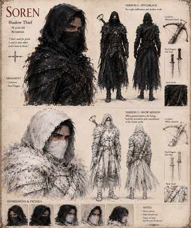
Soren
Steals the war's holiest relic for a duke, opens it in a hunter's cabin, and finds it smells of soup.
Scenes
-
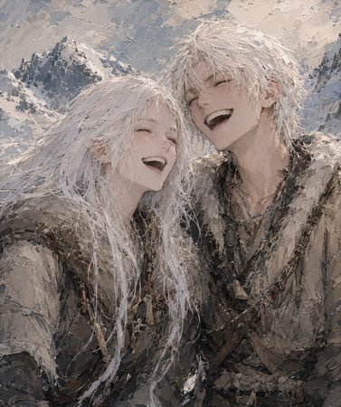
-
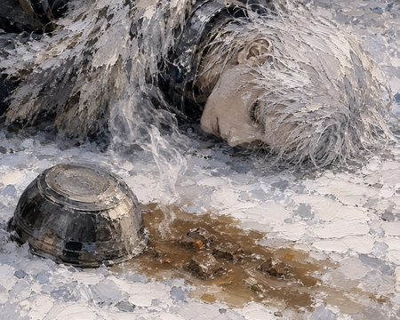
Kaelen, and the broth that never reached the King.
-
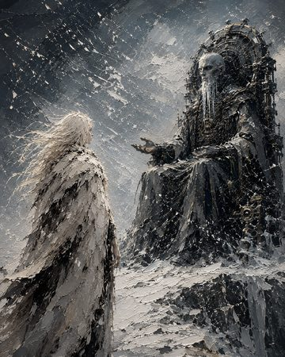
Observer 814 on the frozen summit of Mount Skahr, receiving a climber from House Skarth.
-
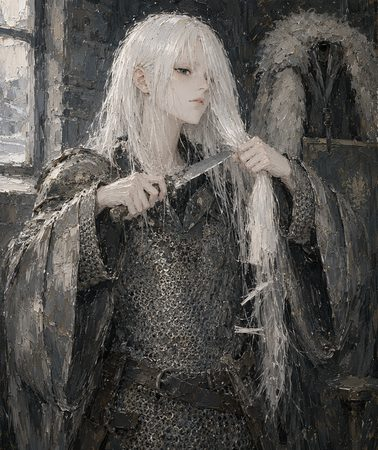
Yvaine cuts her hair and puts on her brother's mail.
-
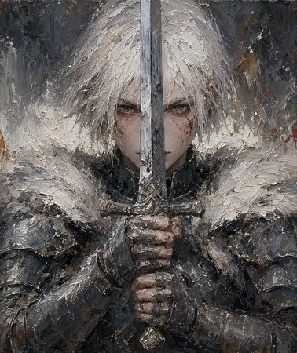
Yvaine, sword before her face — the vow made, the war ahead.
-
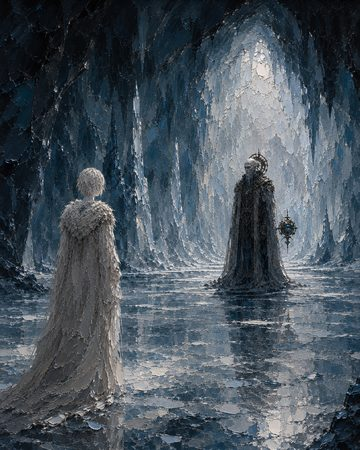
Yvaine and Observer 814 in the ice cavern.
-
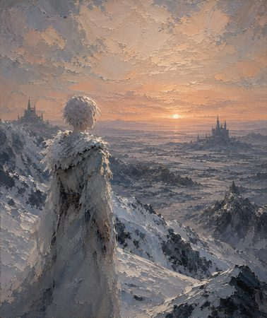
Yvaine, looking out over the frozen plain.
-
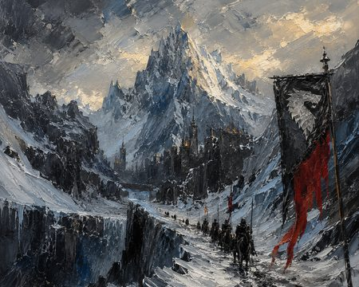
A column of riders under a black banner approaches a mountain keep.
-
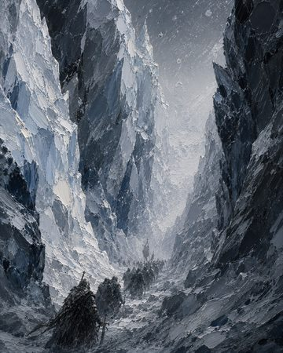
The Broken Glacier.
-

Soren, in a hunter's cabin two days south, with the vessel he was paid to steal.
-

Yvaine in the southern campaign.
-
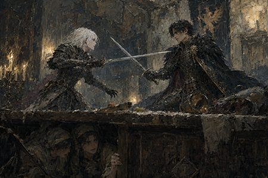
Yvaine and Duke Vane, blades crossed in the hall of Maros's captured keep.
-
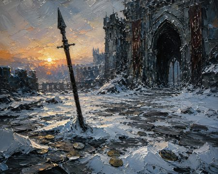
Before the drawbridge of Duke Maros's keep: the iron pike, and the gold no one took.
-
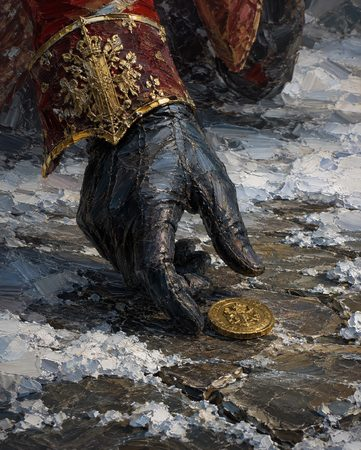
The herald finds the one coin left balanced beneath Duke Vane's eyes.
-
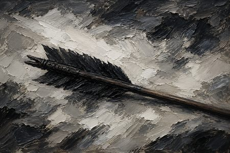
The black-fletched arrow the northern clans use to mark their dead along the ice line.
-
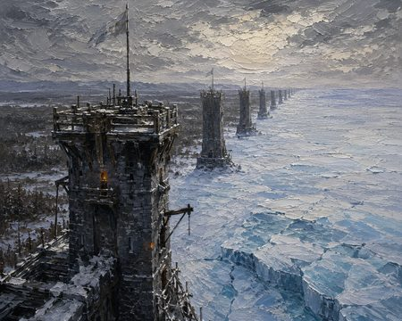
The watchtowers a later king raised along the northern frontier.
-
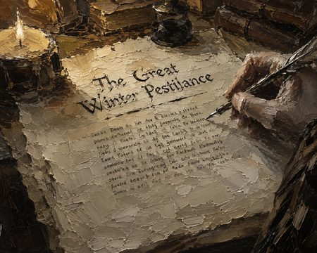
What the scribes wrote: first a timber-tariff dispute, then “the Great Winter Pestilence.”